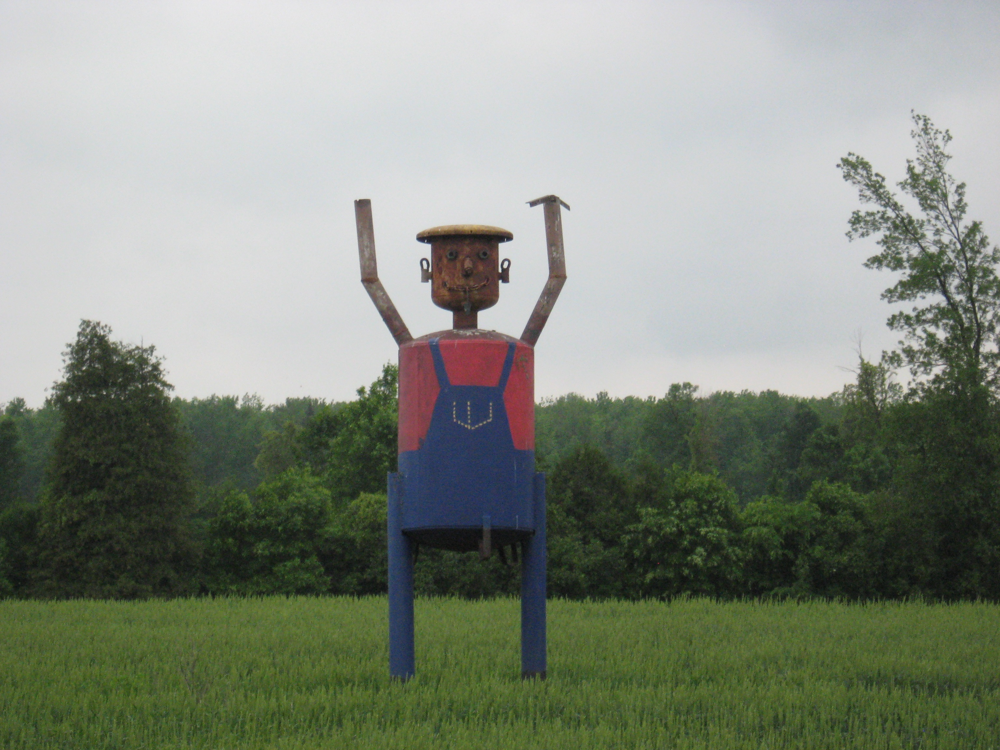
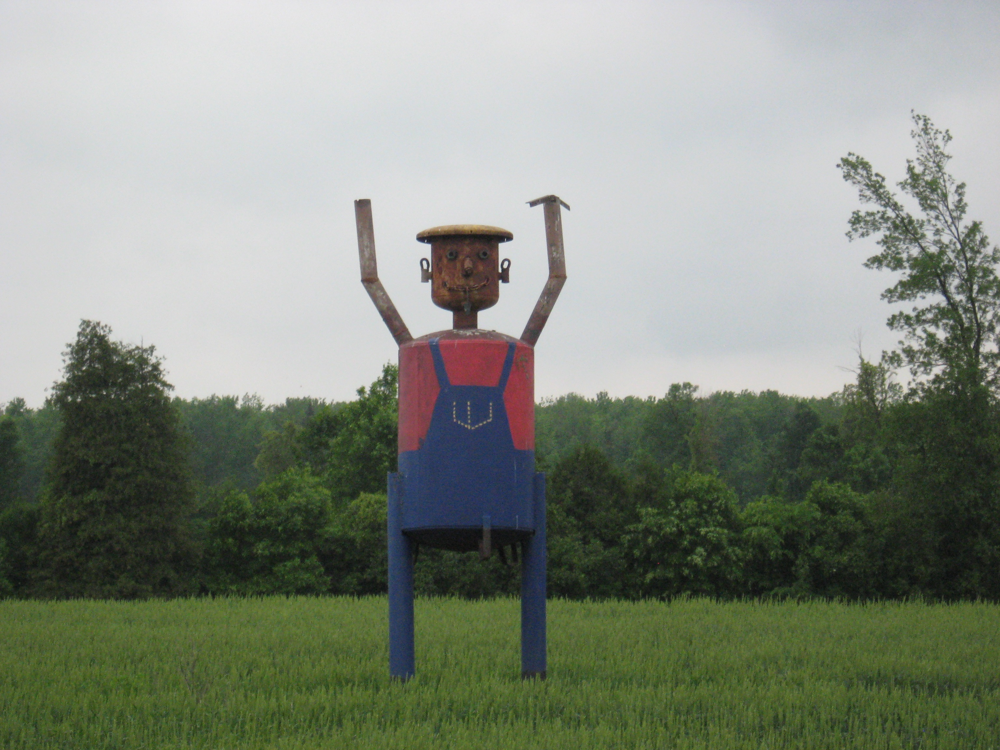
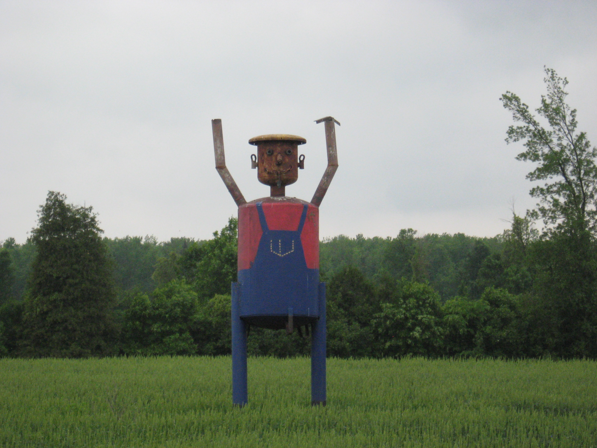

LARGE CANADIAN ROADSIDE ATTRACTIONS

Scarecrow
Havelock, Ontario
Located on the west side of Northumberland County Road 50, south of 13th Line East.
Update (June 2016): The bale of hay is gone!
GPS: N44°23.213 W77°47.493
Original credit (left):
Mark Combot
Updated photo - June 2016 (right):
Havelock Belmont Methuen & District Chamber of Commerce
Return to Ontario Page
Main
|
What's New
|
By Location
|
Alphabetical Listing
|
By Type
Wanted Photos List
 
